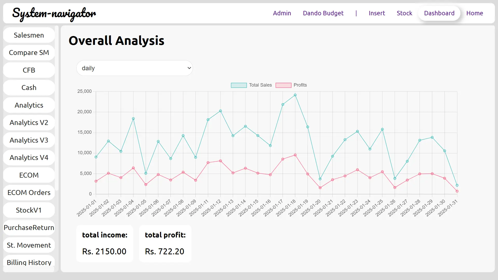

Computer Systems in Teldeniya –
Advanced Reporting & Analytics

Real-Time Insights with Our Restaurant POS Dashboard
Looking for **computer systems in Teldeniya** that provide **real-time analytics and sales tracking**?
Our **restaurant POS dashboard** offers a seamless experience, allowing business owners to monitor
**sales, profits, and inventory** with precision.
Key Features of Our Restaurant POS Dashboard
- ✅ **Real-Time Sales & Profit Tracking** – Monitor **daily, weekly, and monthly sales trends**.
- ✅ **Comprehensive Financial Summary** – Instantly view **total income, expenses, and net profit**.
- ✅ **Interactive Reports & Analytics** – Easily track stock levels, order history, and e-commerce sales.
- ✅ **Smart Navigation** – Quick access to **billing history, stock management, and analytics reports**.
- ✅ **User-Friendly POS Interface** – Optimized for **touchscreens and fast order processing**.
Why Choose Our Computer Systems in Teldeniya?
Our **computer systems in Teldeniya** help restaurants **streamline operations** with intuitive design, powerful analytics, and **automated financial reporting**. Whether you run a **small café or a large restaurant chain**, this system empowers you to **increase efficiency and maximize profits**.
Upgrade Your Restaurant with the Best POS System in Teldeniya!
Invest in a **high-performance restaurant POS system** and gain a **competitive edge** with **data-driven decision-making**. **Contact us today** for a **free consultation** and take your restaurant’s efficiency to the next level! 🚀